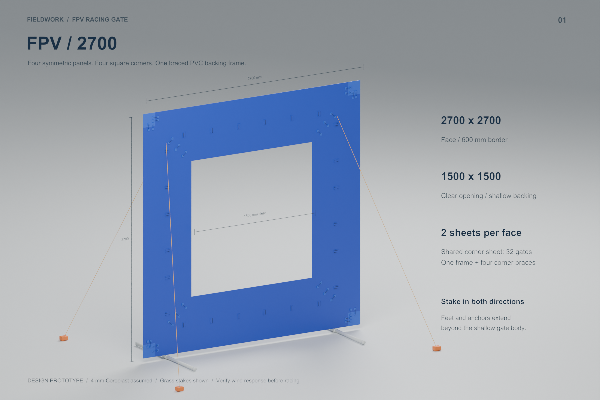
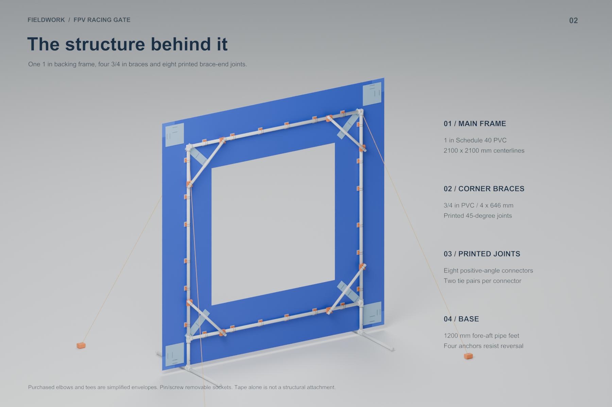
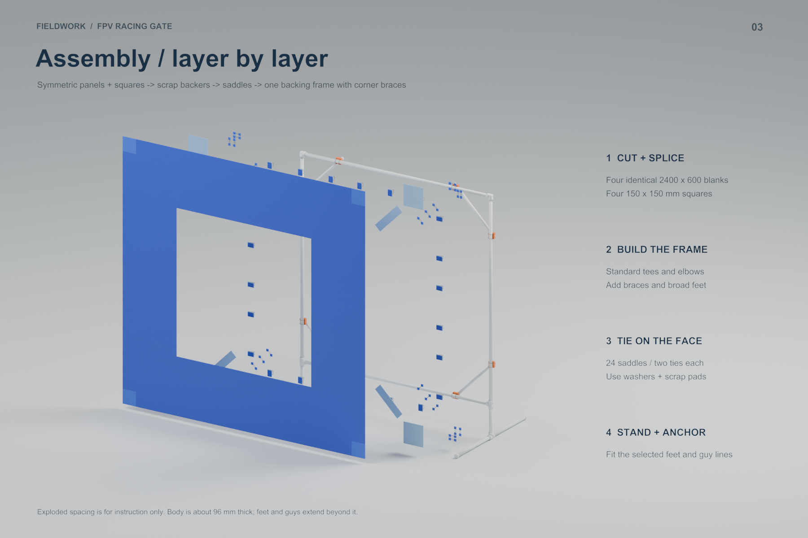
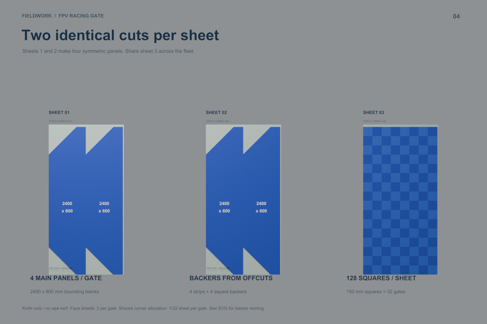
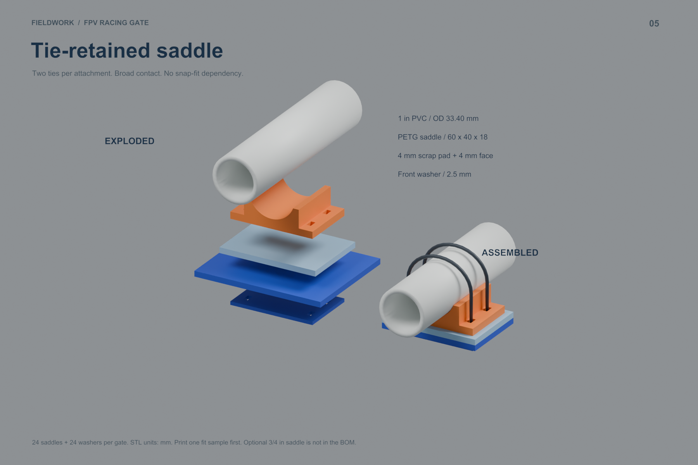
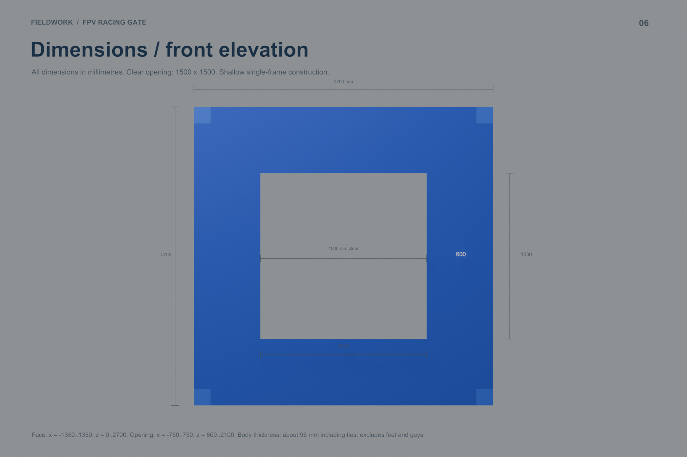
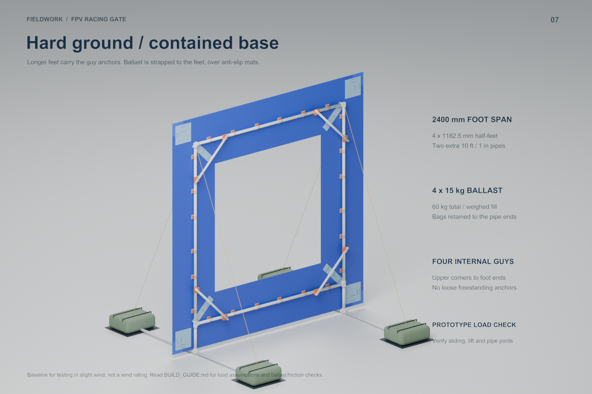
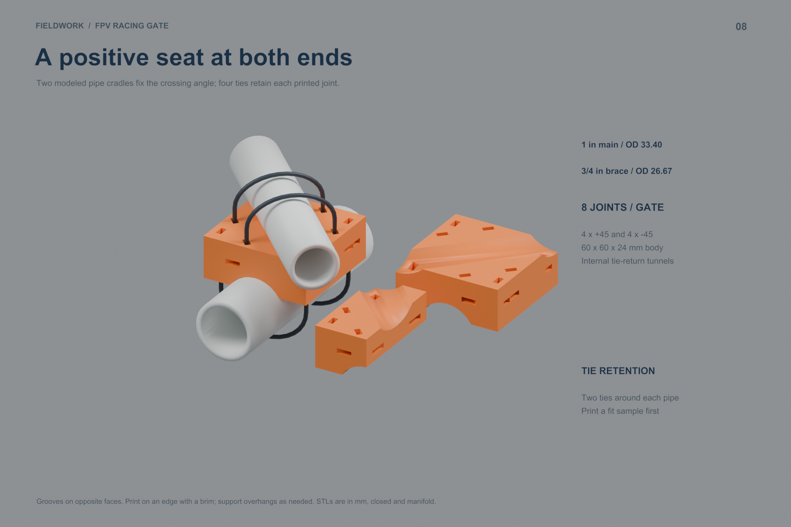
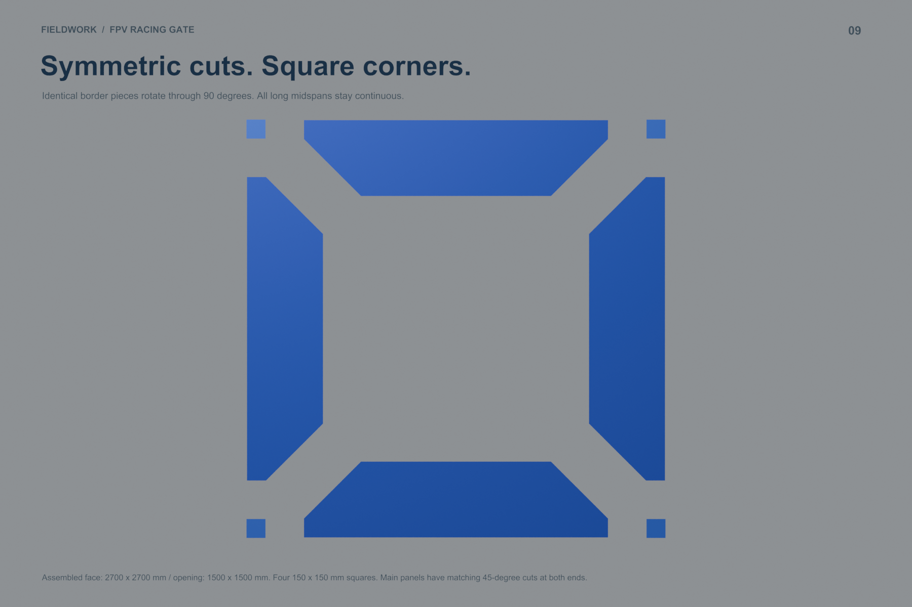
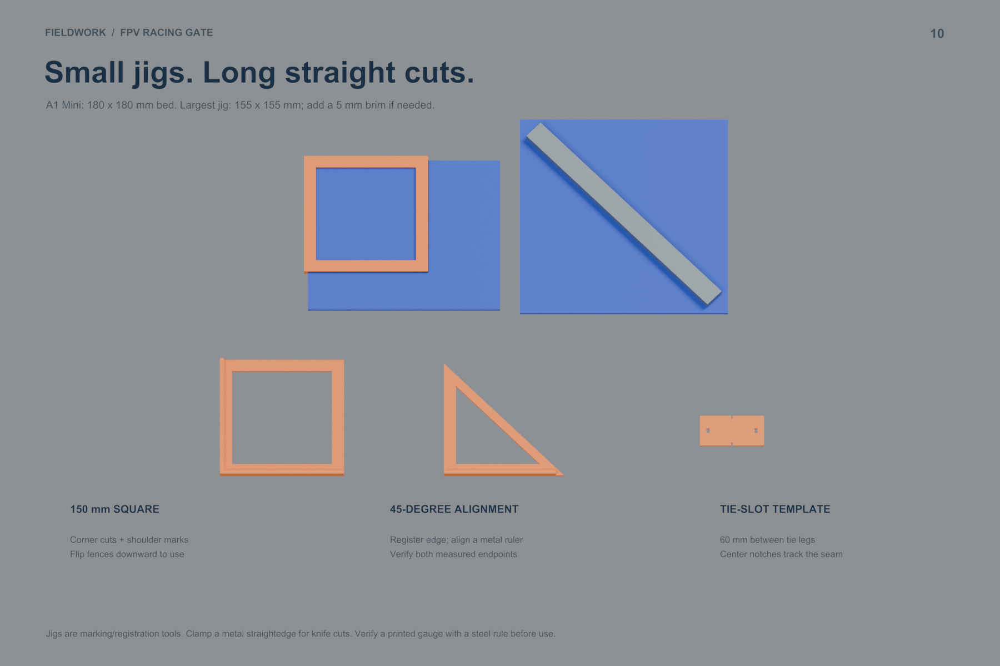

| Shared structure | Grass / soil | Hard ground |
|---|
1-inch frame / ¾-inch braces
24 saddle and washer pairs
8 printed brace-end joints | 1200 mm feet
Four opposing guy stakes
About $231 allocated | 2400 mm feet
Four guys to ballasted feet
Four weighed 15 kg bags |
About $288 for the dual-surface kit at batch allocation, before tax, shipping and ballast fill. A first kit purchasing a whole corner sheet is about $317; its remaining corners serve later gates. Estimates and sources are in the guide.
The eight STL designs are manifold and the face/stock polygons are checked. Physical fit, tie passages, anchor holding and wind performance still need a prototype test. No wind rating is asserted.

Grass / assembled — editable in the corresponding Blender scene.

Rear structure — editable in the corresponding Blender scene.

Exploded assembly — editable in the corresponding Blender scene.

Shared-sheet cutting layout — editable in the corresponding Blender scene.

Face attachment — editable in the corresponding Blender scene.

Dimensions — editable in the corresponding Blender scene.

Hard surface / ballast — editable in the corresponding Blender scene.

Printed brace-end joints — editable in the corresponding Blender scene.

Symmetric panels and square corners — editable in the corresponding Blender scene.

A1 Mini cutting jigs — editable in the corresponding Blender scene.
Fabrication files
Symmetric panel vertices
Main sheet 1
Main sheet 2
Shared corners
Offcut reinforcement nesting
1:1 attachment template
brace joint minus45 mm
brace joint plus45 mm
front load washer mm
jig 45 degree mm
jig square 150 mm
jig tie slots 60 mm
optional saddle 3 4in OD26p67 mm
saddle 1in OD33p40 mm
All STL coordinates are millimetres. The handed brace connectors have separate pipe grooves and internal tie-return tunnels; the brace detail includes a cutaway. Print a fit sample first. The three marking jigs fit the A1 Mini; use a clamped metal straightedge for long knife cuts.